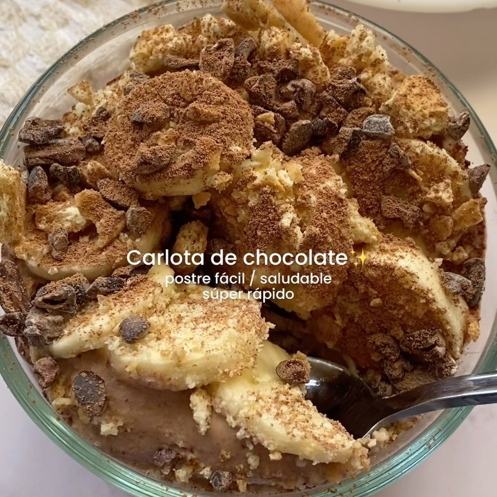

Carlota de chocolate
Ingredientes:
- Yogur griego
- Cacao en polvo
- Esencia de vainilla
- Paquete de Galletas María
- 1 Plátano
Instrucciones:
- Mezclamos yogurt griego + cacao en polvo + esencia de vainilla y reservamos
- En un refractario ponemos capas de galleta maría (puedes usar sin azúcar si quieres) + el yogurt +
plátano y así hasta que nos acabemos los ingredientes
- De toppings yo le puse más plátano + galleta troceada + cacao nibs y lo llevé el refri por 3-4 hrs